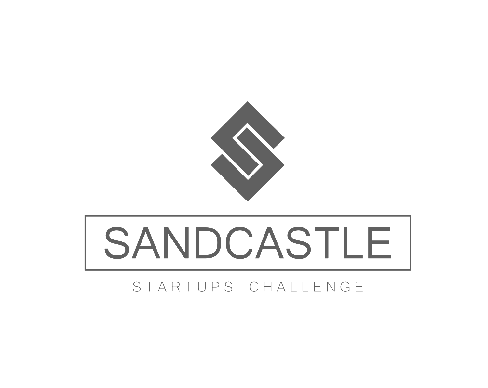

About
Our Vision
Mentor Team
Careers
Contact
Initiatives
Sandcastle Impact Fund
Sandcastle Startups Challenge
Sandcastle Accelerator
S.N.A.P.
Wyohackathon
Ways To Engage
Become a Sponsor
Apply To Compete
World Tokenomic Forum 2020
Events, Recaps & Webinars
Press and News
Donate